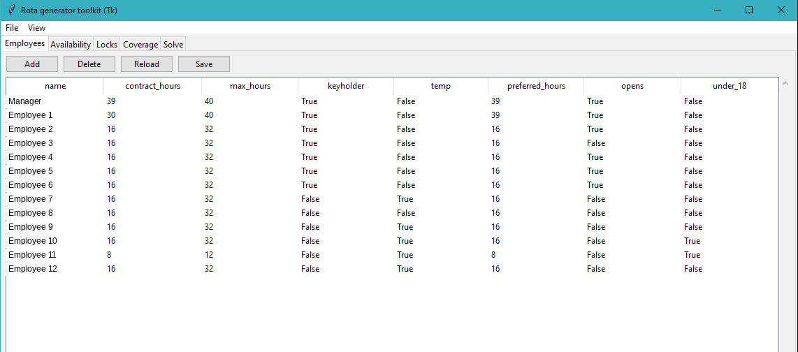
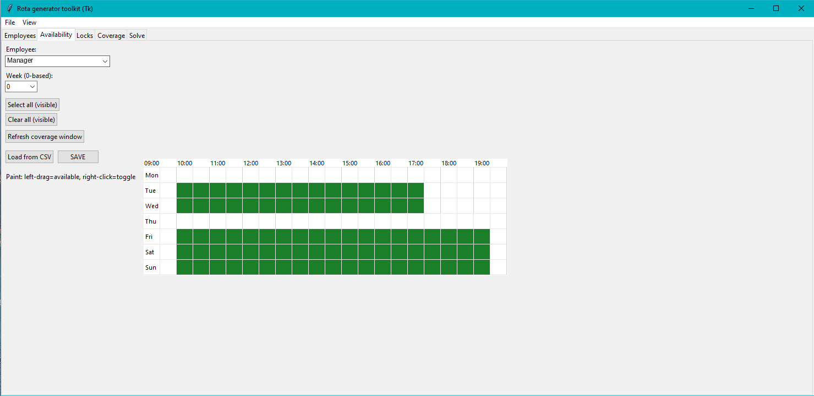
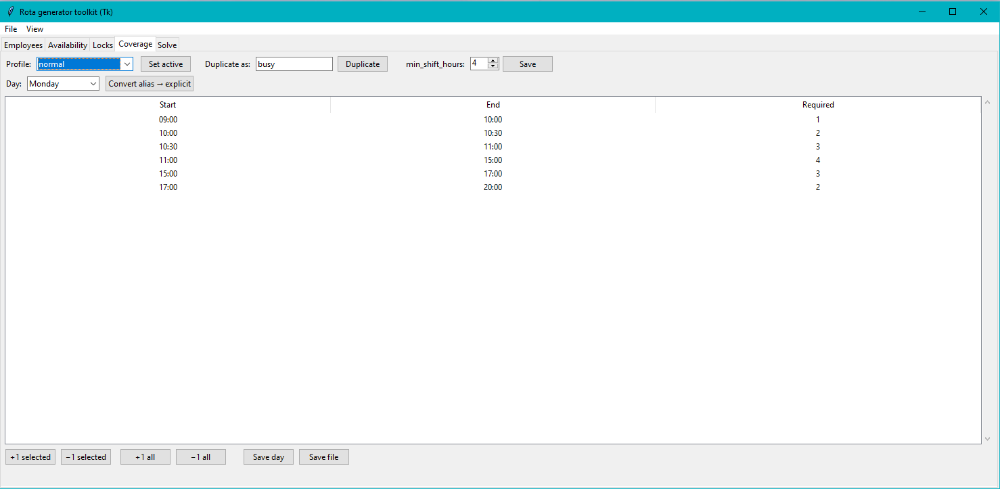
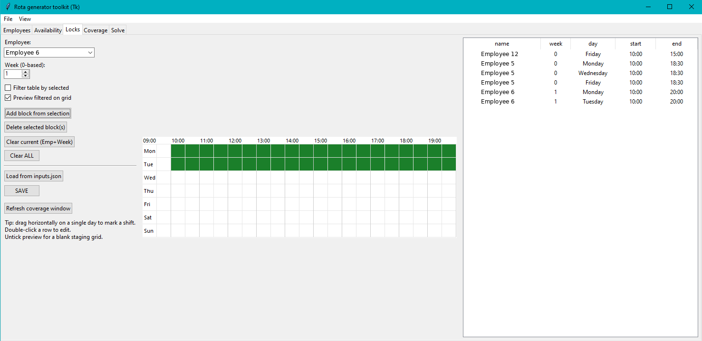
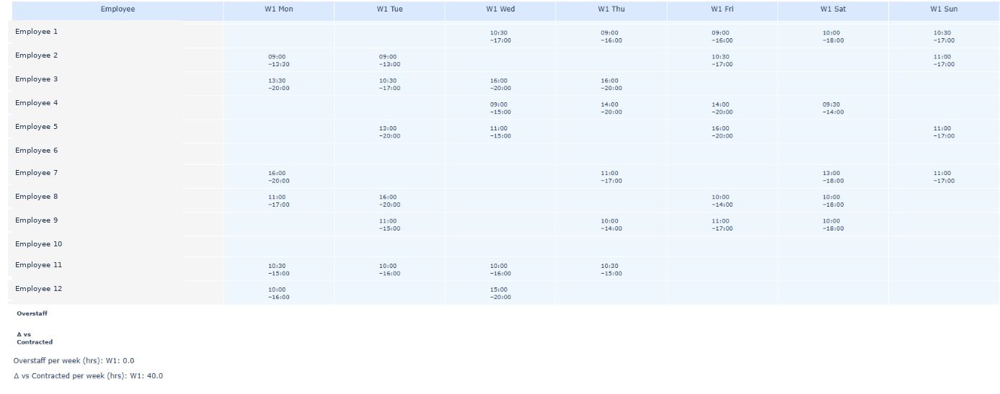

Average weekly saving
Across the historical weeks tested.
A desktop rota tool that automatically builds staff schedules around availability, contracted hours, staffing requirements and fixed shifts.

The tool was tested retrospectively against genuine weekly retail rotas to compare staffing cost while keeping the required business rules and coverage in place.
Across the historical weeks tested.
Every historical week tested produced a lower-cost rota.
Savings were found without removing the required staffing coverage.
A rota cannot simply put enough people on each day. It also needs to account for when staff can work, contracted hours, opening requirements and other business rules.
Staff availability and time off
Contracted and maximum working hours
Minimum staffing throughout the day
Keyholders, opening staff and fixed shifts
Keeping staffing costs under control
The rota generator takes the information a manager already works with and turns it into a set of scheduling rules.
Enter contracted hours, maximum hours and important roles such as keyholders and opening staff.

Mark when each employee can and cannot work, including unavailable days and limited hours.

Tell the tool how many people the business needs at different times throughout each day.

Keep fixed shifts, holidays and other commitments in place while the rest of the rota is built around them.

Click Generate rota and the tool checks the rules, builds the schedule and produces the finished rota.